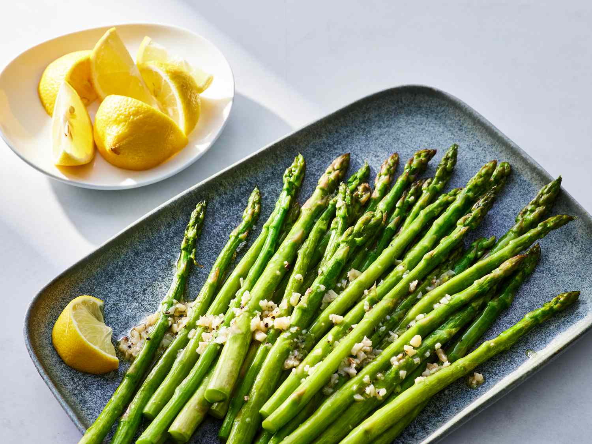

How To Make Asparagus

It feels like there's only one way to prepare asparugus... and this is it!
Ingredients You'll NEED
- Asparagus
- Salt
- Pepper
- Garlic
- Lemon
- Extra Virgin Olive Oil
- Baking sheet, rack, or anything you can use in an oven
Steps:
- Preheat oven to 450 farenheight
- Aquire baking sheet
- Wash and dry asparagus
- Lightly coat asparagus with extra virgin olive oil
- Apply salt, pepper, and garlic as preferred
- Bake asparagus for 15 minutes
- Remove and apply lemon
- Now you are ready to serve!